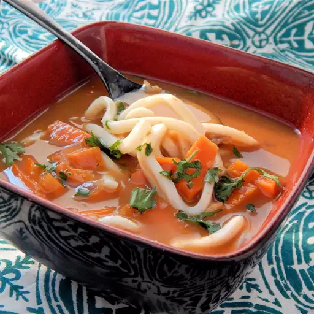

Curry Udon
A great Japanese winter noodle soup dish! Add udon to the curry broth all at once, or to each serving bowl.
40 mins
4 servings
Ingredients
- 3 carrots (cut into bite-size pieces)
- 1 small onion (cut into bite-size pieces)
- 3 tablespoons water
- ¼ cup vegetable oil
- ½ cup all-purpose flour
- 2 tablespoons all-purpose flour
- 2 tablespoons red curry powder
- 5 cups hot vegetable stock
- ¼ cup soy sauce
- 2 teaspoons maple syrup
- 8 ounces udon noodles, or more to taste
Instructions
- Place carrots and onion in a microwave-safe bowl; add water. Cover and microwave on high until tender, about 4 minutes.
- Heat oil in a large pot over medium heat. Whisk in 1/2 cup plus 2 tablespoons flour to form a paste, 1 to 2 minutes. Stir in curry powder. Whisk in hot vegetable stock slowly until incorporated and smooth, about 3 minutes. Stir steamed carrots and onion, soy sauce, and maple syrup into the curry broth.
- Bring a large pot of water to a boil. Cook udon noodles in boiling water, stirring occasionally, until noodles are tender yet firm to the bite, 10 to 12 minutes. Drain. Add noodles to curry broth.